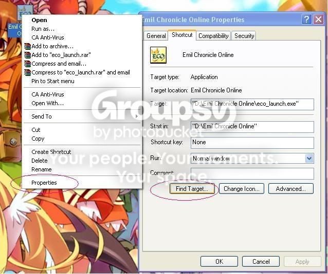

Screenshot
ภาพScreenshotจากเกมเอาได้จากไหนฮะ
http://eco.froztic.in.th/archive/ecofanclub/
http://eco.froztic.in.th/archive/ecofanclub/viewtopic.php?f=7&t=46063

[GM]Paul เขียน:เข้าไปใน Folder ที่เราได้ติดตั้งเกมไว้นะครับ
หรือหากมไร้ว่าติดตั้งไว้ที่ไหน >> อีกวิธีง่ายๆนะครับ ทำตามรูปนะ
คลิ๊กขวาที่ไอคอนเกม >> Properties >> Find Target ก็จะรู้ตำแหน่งของเกม
ว่าเราได้ติดตั้งไว้ที่ไหน ต่อไปวิธี ที่จะเปิดดูรูปที่เราได้เซฟไว้นะครับ
เมื่อเข้ามาใน Folder เกมแล้วให้เข้าไปที่ folder ชื่อว่า data >> scrshot
เปิด folder ที่ชื่อ scrshot ขึ้นมาก็จะเจอรูปที่เราได้เซฟไว้ครับ